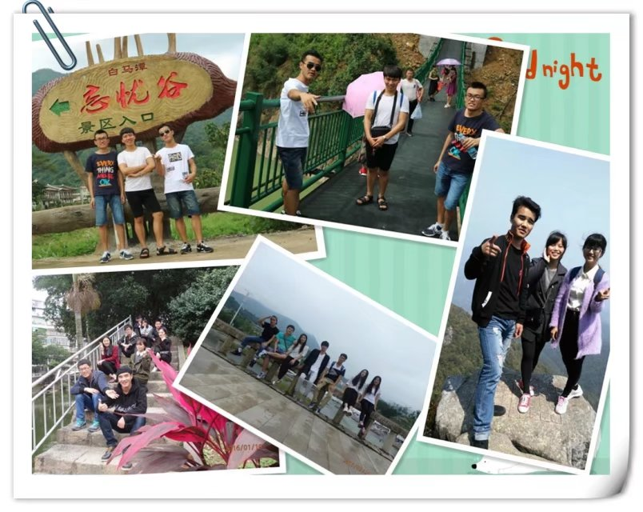

今天再回首，看到这些照片，留在心里的感觉是复杂的，我想哭一场，然后和过去的自己说声再见，好好的启程。
把每一次的相遇都当作告别，把每次的告别又当作相遇。
——中国-厦门

嗯，就这样。
评论：
florence老师 : 想念你！ 加减乘除 回复 florence老师 : 我也是！找个时间，回家看看老师还有朋友。
党兆和 : 想我了就来兰州吧。这个破城市啥都没有，有只有一条我爱的黄河。我带你吃烤羊肉串吧 加减乘除 回复 党兆和 : 好